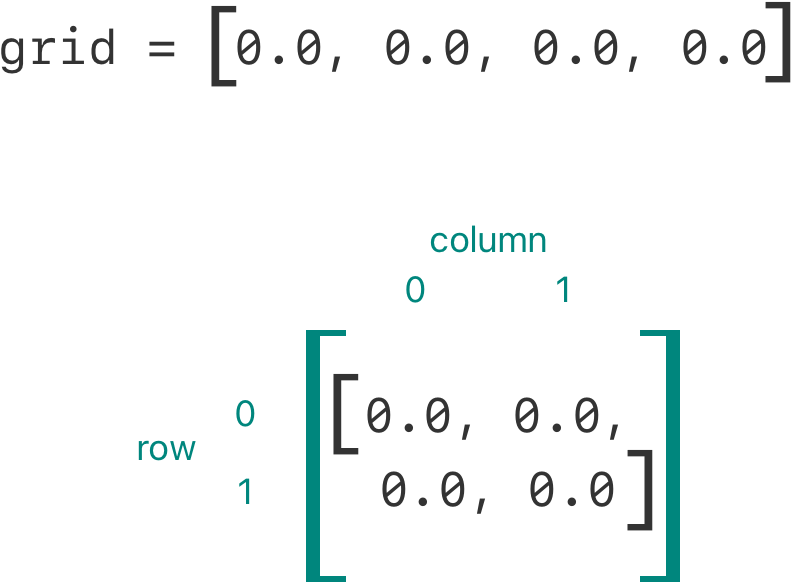

下标可以定义在类、结构体和枚举中，是访问集合、列表或序列中元素的快捷方式。可以使用下标的索引，设置和获取值，而不需要再调用对应的存取方法。举例来说，用下标访问一个 Array 实例中的元素可以写作 someArray[index]，访问 Dictionary 实例中的元素可以写作 someDictionary[key]。
一个类型可以定义多个下标，通过不同索引类型进行对应的重载。下标不限于一维，你可以定义具有多个入参的下标满足自定义类型的需求。
下标语法
下标允许你通过在实例名称后面的方括号中传入一个或者多个索引值来对实例进行查询。它的语法类似于实例方法语法和计算型属性语法。定义下标使用 subscript 关键字，与定义实例方法类似，都是指定一个或多个输入参数和一个返回类型。与实例方法不同的是，下标可以设定为读写或只读。这种行为由 getter 和 setter 实现，类似计算型属性：
subscript(index: Int) -> Int { get { // 返回一个适当的 Int 类型的值 } set(newValue) { // 执行适当的赋值操作 }}newValue 的类型和下标操作的返回类型相同。如同计算型属性，可以不指定 setter 的参数（newValue）。如果不指定参数，setter 会提供一个名为 newValue 的默认参数。
如同只读计算型属性，对于只读下标的声明，你可以通过省略 get 关键字和对应的大括号组来进行简写：
xxxxxxxxxxsubscript(index: Int) -> Int { // 返回一个适当的 Int 类型的值}下面代码演示了只读下标的实现，这里定义了一个 TimesTable 结构体，用来表示对应整数的乘法表：
xxxxxxxxxxstruct TimesTable { let multiplier: Int subscript(index: Int) -> Int { return multiplier * index }}let threeTimesTable = TimesTable(multiplier: 3)print("six times three is \(threeTimesTable[6])")// 打印“six times three is 18”在上例中，创建了一个 TimesTable 实例，用来表示整数 3 的乘法表。数值 3 被传递给结构体的构造函数，作为实例成员 multiplier 的值。
你可以通过下标访问 threeTimesTable 实例，例如上面演示的 threeTimesTable[6]。这条语句查询了乘法表中 3 的第六个元素，返回 3 的 6 倍即 18。
注意
TimesTable例子基于一个固定的数学公式，对threeTimesTable[someIndex]进行赋值操作并不合适，因此下标定义为只读的。
下标用法
“下标”的确切含义取决于使用场景。下标通常作为访问集合，列表或序列中元素的快捷方式。你可以针对自己特定的类或结构体功能来以最恰当的方式实现下标。
例如，Swift 的 Dictionary 类型实现下标用于对实例中储存的值进行存取操作。为字典设值时，在下标中使用和字典的键类型相同的键，并把一个和字典的值类型相同的值赋给这个下标：
xxxxxxxxxxvar numberOfLegs = ["spider": 8, "ant": 6, "cat": 4]numberOfLegs["bird"] = 2上例定义一个名为 numberOfLegs 的变量，并用一个包含三对键值的字典字面量初始化它。numberOfLegs 字典的类型被推断为 [String: Int]。字典创建完成后，该例子通过下标将 String 类型的键 bird 和 Int 类型的值 2 添加到字典中。
更多关于 Dictionary 下标的信息请参考 读取和修改字典。
注意
Swift 的
Dictionary类型的下标接受并返回可选类型的值。上例中的numberOfLegs字典通过下标返回的是一个Int?或者说“可选的 int”。Dictionary类型之所以如此实现下标，是因为不是每个键都有对应的值，同时这也提供了一种通过键删除对应值的方式，只需将键对应的值赋值为nil即可。
下标选项
下标可以接受任意数量的入参，并且这些入参可以是任何类型。下标的返回值也可以是任意类型。
与函数一样，下标可以接受不同数量的参数，并且为这些参数提供默认值，如在可变参数 和 默认参数值 中所述。但是，与函数不同的是，下标不能使用 in-out 参数。
一个类或结构体可以根据自身需要提供多个下标实现，使用下标时将通过入参的数量和类型进行区分，自动匹配合适的下标。它通常被称为下标的重载。
虽然接受单一入参的下标是最常见的，但也可以根据情况定义接受多个入参的下标。例如下例定义了一个 Matrix 结构体，用于表示一个 Double 类型的二维矩阵。Matrix 结构体的下标接受两个整型参数：
xxxxxxxxxxstruct Matrix { let rows: Int, columns: Int var grid: [Double] init(rows: Int, columns: Int) { self.rows = rows self.columns = columns grid = Array(repeating: 0.0, count: rows * columns) } func indexIsValid(row: Int, column: Int) -> Bool { return row >= 0 && row < rows && column >= 0 && column < columns } subscript(row: Int, column: Int) -> Double { get { assert(indexIsValid(row: row, column: column), "Index out of range") return grid[(row * columns) + column] } set { assert(indexIsValid(row: row, column: column), "Index out of range") grid[(row * columns) + column] = newValue } }}Matrix 提供了一个接受两个入参的构造方法，入参分别是 rows 和 columns，创建了一个足够容纳 rows * columns 个 Double 类型的值的数组。通过传入数组长度和初始值 0.0 到数组的构造器，将矩阵中每个位置的值初始化为 0.0。关于数组的这种构造方法请参考 创建一个带有默认值的数组。
你可以通过传入合适的 row 和 column 数值来构造一个新的 Matrix 实例：
xxxxxxxxxxvar matrix = Matrix(rows: 2, columns: 2)上例中创建了一个两行两列的 Matrix 实例。该 Matrix 实例的 grid 数组按照从左上到右下的阅读顺序将矩阵扁平化存储：

将 row 和 column 的值传入下标来为矩阵设值，下标的入参使用逗号分隔：
xxxxxxxxxxmatrix[0, 1] = 1.5matrix[1, 0] = 3.2上面两条语句分别调用下标的 setter 将矩阵右上角位置（即 row 为 0、column 为 1 的位置）的值设置为 1.5，将矩阵左下角位置（即 row 为 1、column 为 0 的位置）的值设置为 3.2：

Matrix 下标的 getter 和 setter 中都含有断言，用来检查下标入参 row 和 column 的值是否有效。为了方便进行断言，Matrix 包含了一个名为 indexIsValid(row:column:) 的便利方法，用来检查入参 row 和 column 的值是否在矩阵范围内：
xxxxxxxxxxfunc indexIsValid(row: Int, column: Int) -> Bool { return row >= 0 && row < rows && column >= 0 && column < columns}断言在下标越界时触发：
xxxxxxxxxxlet someValue = matrix[2, 2]// 断言将会触发，因为 [2, 2] 已经超过了 matrix 的范围类型下标
正如上节所述，实例下标是在特定类型的一个实例上调用的下标。你也可以定义一种在这个类型自身上调用的下标。这种下标被称作类型下标。你可以通过在 subscript 关键字之前写下 static 关键字的方式来表示一个类型下标。类类型可以使用 class 关键字来代替 static，它允许子类重写父类中对那个下标的实现。下面的例子展示了如何定义和调用一个类型下标：
xxxxxxxxxxenum Planet: Int {case mercury = 1, venus, earth, mars, jupiter, saturn, uranus, neptunestatic subscript(n: Int) -> Planet {return Planet(rawValue: n)!}}let mars = Planet[4]print(mars)